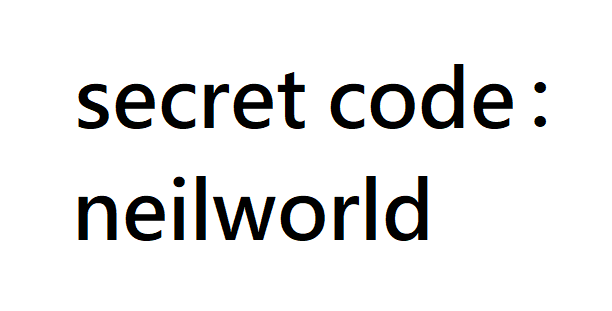

12 — Key Sequence Detection

主題
輸入特定的密碼，當你輸入完後會出現對應特效，
這篇就是介紹如何用JS來做這樣的小效果。
步驟
Step1. 設定目標
在這個效果中，目的是在瀏覽器內容中透過鍵盤觸發對應的“密碼”後執行，
所以需要設定一個陣列來保存輸入值，並設定好設定的密碼(我設定為neilworld)，
接著針對window對這個瀏覽器視窗來做addEventListener('keydown'..)監聽鍵盤動作。
Step2. 執行
當觸發keydown時利用陣列的push()來塞入鍵盤動作所觸發的輸入內容
e.key，
接著用陣列的splice()來控制密碼陣列，使其不超出密碼長度且堆疊替換掉第一個元素，
最後透過陣列的join()及字串的includes()來驗證輸入內容是否與設定密碼相同。
程式備註
1 | const pressed = []; //保存輸入值用的陣列 |
JavaScript語法&備註
Array.prototype.splice()
splice(start, deleteCount, item1, item2, ...)可以對陣列內容過行刪除或新增
第一個參數 start 為開始位置，若為負值則會返著數（由陣列尾部開始數），
第二個參數 deleteCount 為移除數量，若為0則不移除、若為負值則沒反應，
第三個參數 item1.. 開始的為加入元素，可從第一個參數位置開始塞陣列元素。
例如
1 | var arr = [1,2,3]; |
所以回到練習中的這段code，就會了解為何這樣可以維持陣列長度並堆疊替換第一個元素
1 | const pressed = []; |
以此範例來說，第一個參數始終會是-7，第二個參數會是當前輸入陣列長度-6，
所以當事件觸發到第七個陣列值（第七個輸入被觸發且push進pressed時），
例如[1,2,3,4,5,6,7]時會變成pressed.splice(-7,1)，
等於刪除倒數第七個元素（也就是index0第一筆），
並透過陣列長度-設定密碼長度來決定刪除數量，使其維持在固定長度，
之後每次的push會加在尾段，而splice會刪除第一個元素。
Array.prototype.join()
用join()可以把陣列轉為字串，並透過參數設定連接符號。
例如：
1 | var arr = [1,2,3]; |
Array.prototype.includes()
在string跟array都有includes()可以使用，
都是去判斷string/array是否包含incudes設定的參數後回傳true/false
在這個練習中，因為使用pressed.join('').includes(secretCode);
依據處理優先序在pressed.join()時已經被轉字串了，所以這裡的incudes()是屬於string的。
探索
這次雖然只是小小的效果，在寫心得的時候真的也是學到很多以前沒注意的東西，
並在寫includes()才也知道string也有這個效果，以往我都只會使用match()，
includes()屬於ES6的語法，爬文後整理到關於字串比對的使用還有以下各種方法：
1 | var str = 'abcde'; |
- Post title：【JS30】Key-Sequence-Detection
- Post author：Neil Yang
- Create time：2019-05-20 00:00:00
- Post link：https://des86532.github.io/2019/05/20/JS30/JS30-key-sequence-detection/
- Copyright Notice：All articles in this blog are licensed under BY-NC-SA unless stating additionally.